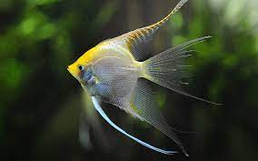

Pterophyllum is a small genus of freshwater fish from the family Cichlidae known to most aquarists as
angelfish. All Pterophyllum species originate from the Amazon Basin, Orinoco Basin and various rivers in
the
Guiana Shield in tropical South America. The three species of Pterophyllum are unusually shaped for
cichlids
being greatly laterally compressed, with round bodies and elongated triangular dorsal and anal fins.
This
body shape allows them to hide among roots and plants, often on a vertical surface. Naturally occurring
angelfish are frequently striped transversely, colouration which provides additional camouflage.
Angelfish
are ambush predators and prey on small fish and macroinvertebrates. All Pterophyllum species form
monogamous
pairs. Eggs are generally laid on a submerged log or a flattened leaf. As is the case for other
cichlids,
brood care is highly developed.
Pterophyllum should not be confused with marine angelfish, perciform fish found on shallow ocean reefs.